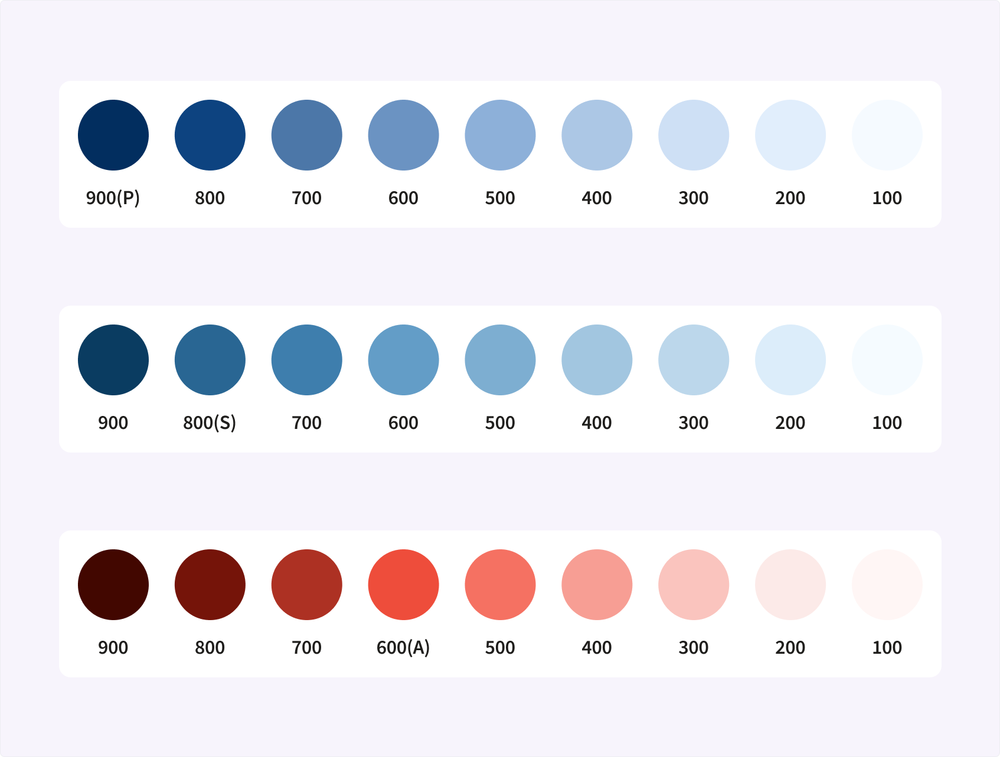
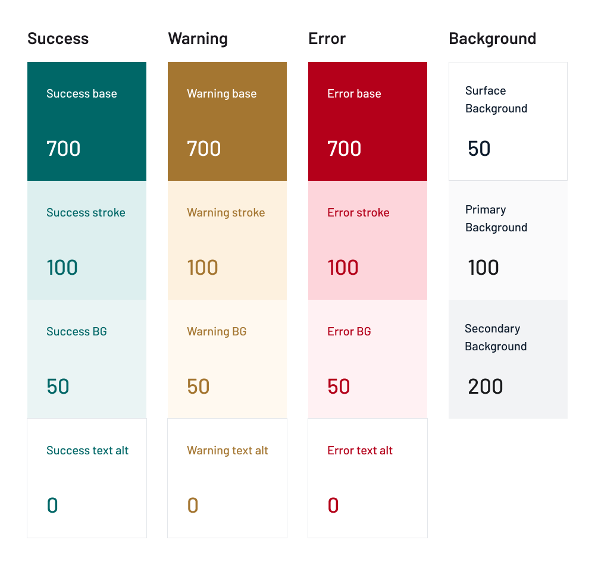
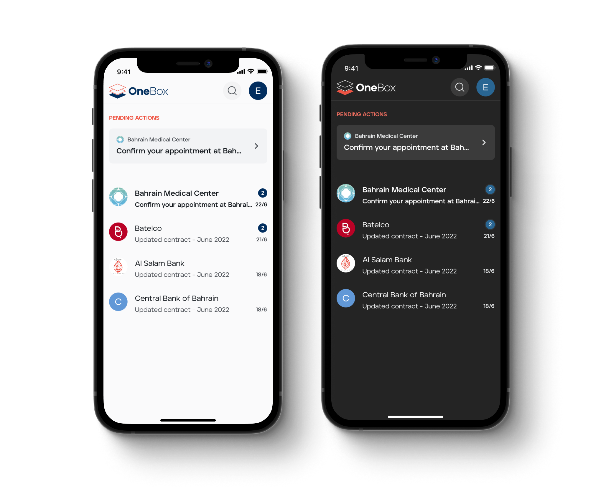

Creating a semantic color system to support theming
Refactoring an existing color system to support theming and improve consistency
Role: Product Designer
Timeline: January 2023 - March 2023
Small teams on client projects don’t get much help in creating and maintaining design systems. The designer has to decide on a system and level of detail based on the project type, budget, and time-frame. Decisions made early in the project with limited information can cause issues later on. Sometimes, the only solution is to reassess and choose a different approach.
When I joined this project, our team faced such challenges. There were two small teams working on different products and sharing a design library. Both products were in their early stages, and my team was gearing up to launch the MVP for the mobile app. We were working on a secure communication platform, while the other team was developing a digital ID solution.
The problem
Inconsistencies started popping up across the different products. The existing color system was too flexible, making it hard for different designers to agree on how to use colors. Developers struggled to maintain color consistency, leading to inefficiencies in the design and development processes. To add to the challenge, we received a new requirement, to support theming.
Process
To tackle these issues, I met with the front-end developers. We decided to shift towards a semantic way of naming colors. This meant using names like "background primary" instead of intrinsic properties like hue and lightness.
I began by examining how colors were used in the designs. I generated a range of shades based on the colors in the library and used them as tokens for the semantic style definitions.Working closely with the development team, I gathered feedback and refined the new naming proposal.
– Shades created from the brand colors
– Example of the semantic style definitions
After updating the color styles in the library, I added brief descriptions of how colors were used. This documentation enabled other designers to quickly understand the system and its usage. I also documented the process of generating new styles.
Challenges
The goal of this initiative was to create a system that would improve the workflow and collaboration of the team while being simple and easy to maintain. This meant defining the least amount of styles, which inevitably resulted in more dependencies between styles. This was a compromise, but the result was a more consistent system, better collaboration across teams, and easy support for theming.
– Example of a dark theme using the new system
Results
Naming the colors according to their usage made it easier for designers and developers to understand how to use them. It made it possible to support theming by simply replacing the color values without the need to change their names.
The semantic system increased consistency across multiple products, improved usability of the design library, and made it easier for the design and development teams to collaborate more effectively.